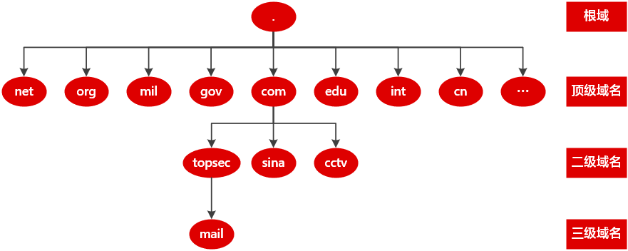
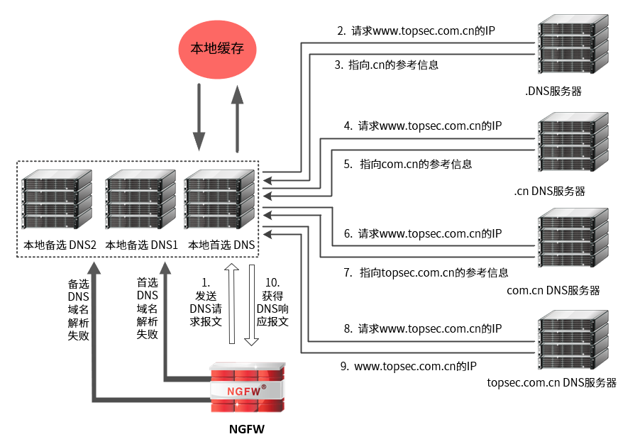
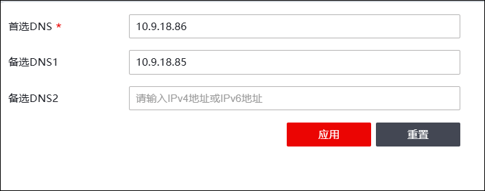

TCP/IP协议使用IP地址实现网络的连接和通信，而IP地址由点分十进制组成，对用户而言，记住众多网络主机对应的IP地址难度非常大。针对此问题，专门设计了域名（一种字符串形式的主机命名机制）以及DNS（Domain Name System，域名系统），其中DNS提供域名与IP地址间的查询机制，自动实现域名地址与IP地址的映射，用户只需知道某网络服务的域名而无需知道其IP地址即可访问该网络服务。
为在Internet中通过域名唯一标识某台主机，并为网络服务指定一个有意义的名字，方便用户记忆，域名采用树形结构的命名方案。每个申请Internet域名的国家都需向NIC（Network Information Center，网络信息中心）注册一个顶级域名，NIC将顶级域名的管理权分配给指定的管理机构，这些管理机构再对其被授权管理的域继续进行划分，以此下去，便形成层次结构的域名体系，域名树形结构如下图所示。

域名级别包括根域、顶级域名、二级域名、三级域名等等，不同级别的域名用点号分隔，级别最低的域名写在最左边，级别最高的域名则写在最右边。域名体系的层次结构说明如下：
域名级别 |
说明 |
|---|---|
根域 |
根域用点号（.）表示，以点号结尾的域名为完全合格域名。 |
顶级域名 |
包括国际顶级域名和国内顶级域名。 举例： 1）cn：供中国使用；us：供美国使用；jp：供日本使用。 2）net：供网络提供商使用；com：供商业组织使用；edu：供教育机构使用；gov：供政府机构使用；org：供非商业非盈利单位使用；mil：供军事机构使用。 |
二级域名 |
顶级域名之下的域名。由字母、数字和连接符（-）组成，各级域名之间用实点（.）连接。 |
…… |
…… |
DNS域名系统采用C/S架构，传输层协议为TCP或UDP，服务器端口号53，DNS服务器负责域名解析，DNS客户端提出查询请求。NGFW在系统中作为DNS Client，当其通过域名访问网络资源时，通过向DNS服务器发送域名解析请求，获取域名对应的IP地址，进而通过IP地址访问具体的网络服务。NGFW访问 www.topsec.com.cn 时，DNS域名解析完整过程如下图：

NGFW首先向本地首选DNS服务器发起域名解析请求，如果本地首选DNS服务器进行域名解析失败，则向本地备选DNS服务器发起域名解析请求。
本地DNS服务器接收域名请求后的处理流程如下：
1）本地DNS服务器进行域名解析，查询其缓存表；如果查找到域名对应的IP地址，本地DNS服务器向NGFW返回该域名对应的IP地址，否则向根域服务器发起请求报文。
2）根域服务器收到请求报文，查询其映射表项，然后向本地DNS服务器返回指向.cn服务器的IP地址；本地DNS服务器获取.cn服务器IP地址后，向.cn服务器发起域名请求。
3）流程同2）逐级查询，直到查询到最后一个域名服务器topsec.com.cn，最后一个域名服务器将域名www.topsec.com.cn对应的IP返回给本地DNS服务器。
4）本地DNS服务器接收到.topsec.com.cn服务器解析成功的响应报文，将域名与IP地址的映射关系缓存至本地，并将域名解析结果发送给NGFW。
下面介绍NGFW作为DNS客户端时，如何配置其本地DNS服务器。
| 步骤1 | 选择 系统管理 > ，如下图所示。 |

| 步骤2 | 配置DNS服务器。在“首选DNS服务器”文本框中输入优先级最高的DNS服务器的IP地址；如果有备用的DNS服务器，则在“备选DNS1”/“备选DNS2”文本框中输入其IP地址。 |
| 步骤3 | 点击【应用】按钮完成DNS服务器的配置；点击【重置】按钮则恢复系统出厂配置。 |